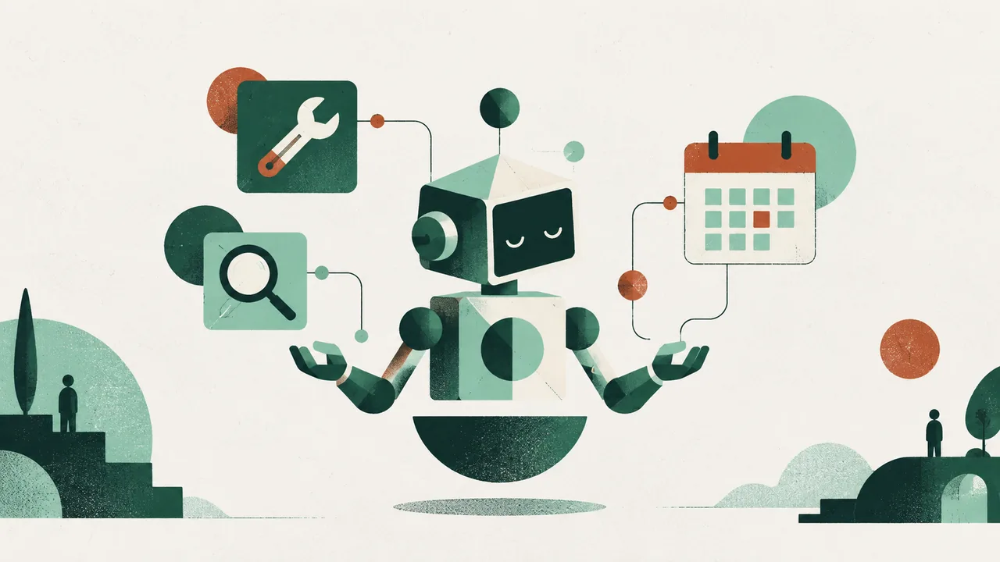

AI 인사이트 · 해설
2.4조 중 710억만 켜는 설계, 과제당 비용 60% 절감이 가리키는 곳
소식 · 원문 발표 2026-11-16 · 사이트 수록 2026-11-17 · 해설 본문 예상 읽기 약 4분
장기 에이전트 작업의 비용이 토큰값과 활성 토큰 수의 곱으로 결정된다면, 모델 설계가 바뀔 때 작업 설계도 따라 바뀐다. 알리바바는 11월 16일 항저우에서 Qwen4-Max를 공개했다. 새 Qwen4 아키텍처를 기반으로 만들어졌으며, 총 2.4조 파라미터의 희소 MoE, 즉 문제마다 필요한 일부 전문가 네트워크만 켜는 구조로 토큰당 710억 개, 71B의 파라미터만 활성화한다. 같은 2.4T 규모의 전작 Qwen3.8-Max보다 활성 파라미터가 25% 적다. 여기에 텍스트와 이미지, 영상 입력을 함께 받는 네이티브 비전과 100만 토큰 컨텍스트가 붙었다.
활성 파라미터를 줄이는 것이 왜 비용 문제인지는 MoE의 계산 구조에서 나온다. 입력 토큰마다 라우터가 몇 개의 전문가 네트워크를 켤지 정하고, 켜진 네트워크의 파라미터만 연산에 참여하므로, 전체 파라미터가 아무리 커도 토큰당 연산량은 활성 부분에 비례한다. 총 용량을 늘리면서 토큰당 비용을 같은 수준에 둘 수 있는 이유다. Qwen4-Max는 총 규모를 2.4T로 유지한 채 활성량을 25% 줄여 토큰 하나를 처리할 때의 연산 부담을 낮췄다. 가격은 원문에서 암시적 캐시 히트 시 입력이 100만 토큰당 0.075달러라고 되어 있고, 그 밖의 입력·출력 단가 수치는 이번 동결 근거 범위에서 확인되지 않는다.
회사가 제시한 성능·비용 수치를 보자. Code Arena에서는 6위였고, 에이전트 워크플로와 사무 생산성, 시각 추론 전문 벤치마크인 Agents' Last Exam, Vals Index, JobBench, Chartography에서도 좋은 점수를 냈다고 회사가 밝힌다. 자체 벤치마크 Work360(721개 전문분야 과제)에서는 전작 Qwen3.8-Max보다 전반적으로 우수했고, High effort 추론에서 토큰을 35% 적게 썼으며, 과제당 평균 비용을 약 60% 줄였다. Work360 과제당 평균 비용의 절대액은 이번 동결 근거 범위에서 확인되지 않는다. 토큰 절감과 단가가 함께 붙으면 과제당 비용은 두 요소의 곱으로 내려가는 구조인데, 60%라는 폭에 두 요소가 각각 어떤 비중으로 기여했는지의 분해는 발표에 없다.
네이티브 비전과 100만 토큰 컨텍스트도 장기 에이전트 작업의 설계 조건을 바꾼다. 문서나 화면 기록을 별도 전처리 파이프라인 없이 입력 계층에서 맥락에 넣을 수 있고, 컨텍스트가 길어지면 여러 단계에 걸친 작업 상태를 외부 저장소로 덜 옮겨도 된다. 다만 컨텍스트에 담는 토큰도 전부 과금 대상이므로, 담을 수 있는 폭이 넓어질수록 무엇을 맥락에 남기고 무엇을 요약해 버릴지 판단은 오히려 정교해져야 한다.
지켜야 할 경계도 분명하다. Work360은 회사가 직접 만든 벤치마크이고, 벤치마크와 비용 절감 수치는 모두 알리바바의 자체 측정이라 독립 검증은 아직 없다. 자동차 제조 시연에서 부품 프로그래밍 작업 시간을 약 475분에서 24분으로 줄였다는 발표도 선정된 과제에서의 단일 사례다. 한 가지 혼동도 피해야 한다. 11월 11일부터 qwen4-max-preview라는 별도 모델이 미리보기로 운영 중이었고, 이번 공개는 그 후속 확정 발표에 해당한다.
가중치는 공개되지 않았다. 소형 Qwen4 계열만 추후 오픈웨이트로 제공하겠다고 예고했을 뿐 시기는 정해지지 않았고, 플래그십은 가중치가 열려 있지 않아 QwenCloud의 Token Plan과 API, QwenWork·QwenStudio 같은 알리바바 플랫폼을 통해서만 쓸 수 있다. 과제당 비용 구조가 60% 내려갔다면 설계의 앞자리로 옮겨지는 질문은 '어떤 모델을 쓸까'보다 '어떤 과제를 이 모델에 얼마만큼 맡길까'다. 토큰을 덜 쓰는 추론 설정, 컨텍스트에 남길 것과 버릴 것, 검증과 재시도를 어디에 배치할지가 비용의 대부분을 정한다. 이 계산의 입력값은 자기 과제를 자기 데이터로 직접 측정해 만들어야 하며, 도입 전 재측정이 첫 절차다.